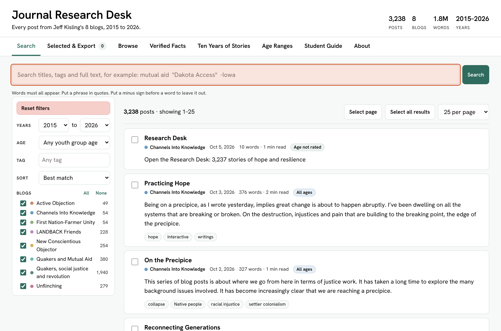
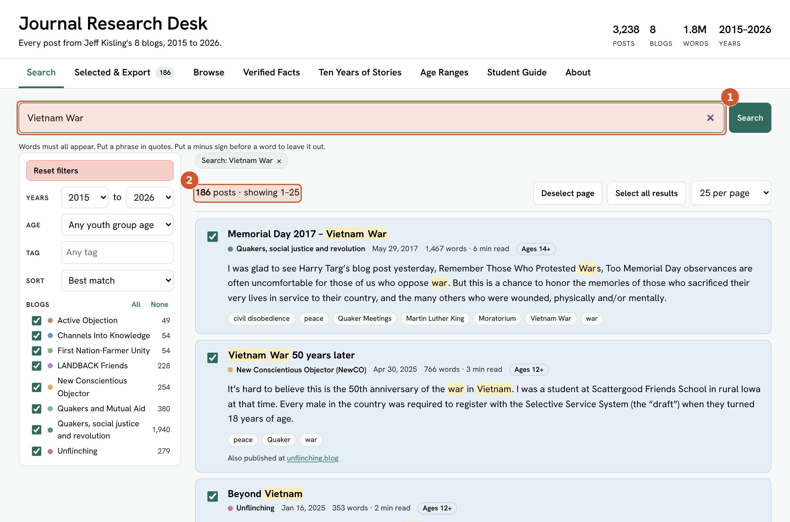
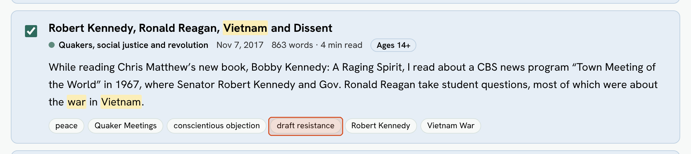
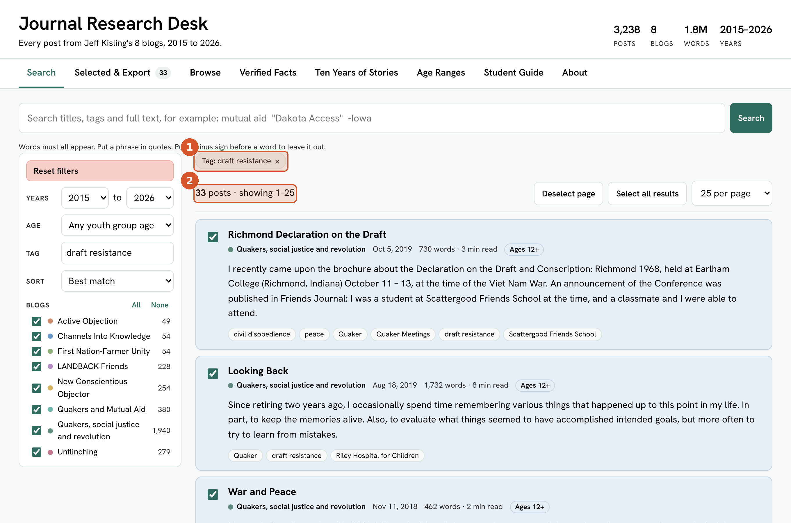
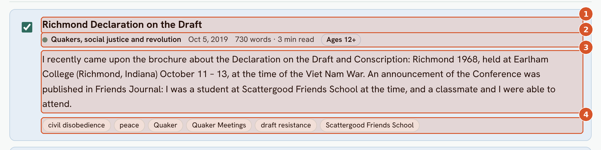
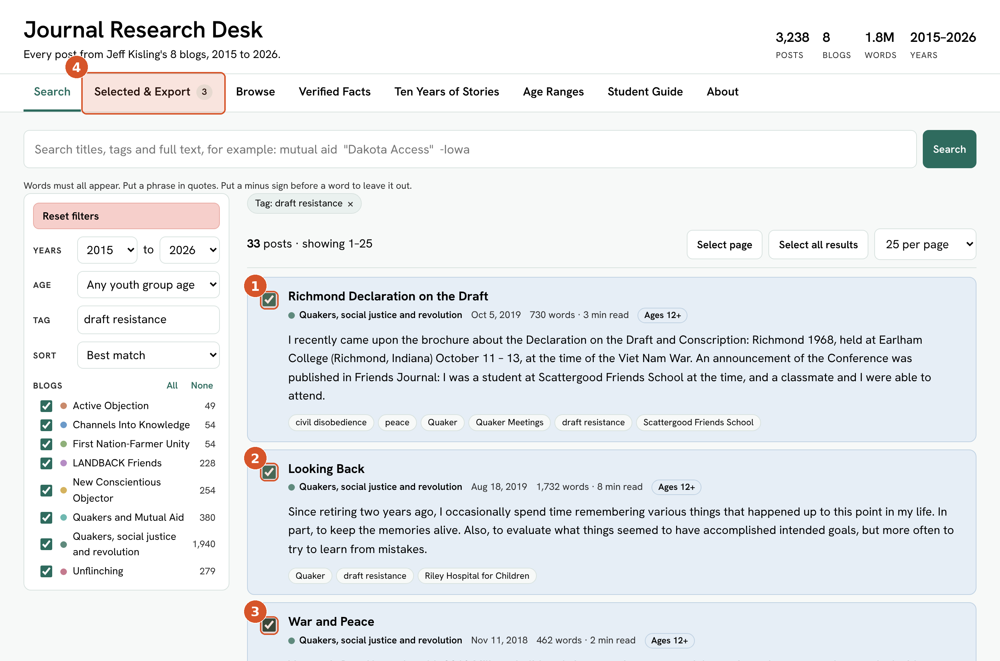
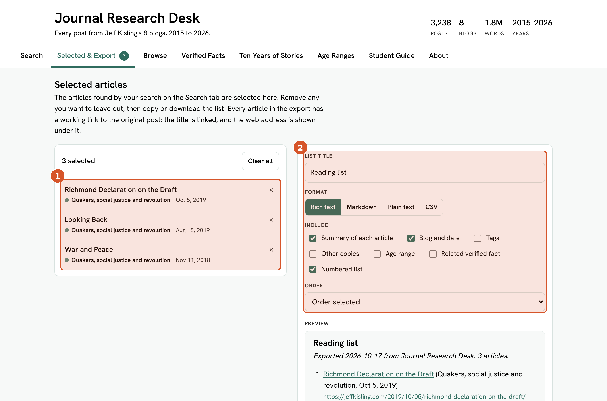
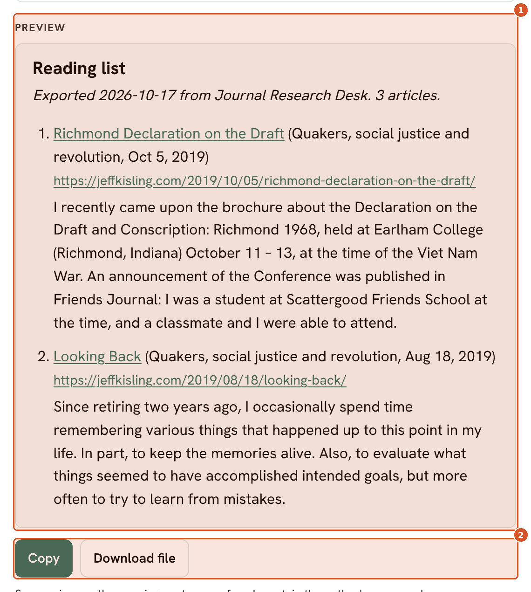

The shape of a search
- Type what you're after in the search box — the library narrows and ranks itself.
- Follow a tag on a promising result to turn a loose match into an exact filter.
- Check off what's worth keeping, then export it as a reading list.
1
Start on the Search tab
This is the whole library, unfiltered: 3,238 posts across 8 blogs, 2015 to 2026. The search box sits at the top of the results column, and the filters — years, age range, tag, sort, and which blogs to include — run down the left.

Every search starts here — nothing has been typed or filtered yet.
2
Type what you're looking for
Typing Vietnam War narrows the library from 3,238 posts down to 186 — everything that mentions it, ranked by how well it matches, with the matching words marked in the title and summary of each result.

The search box (1) and the new result count (2) — both update as you type.
i186 is still a lot to read. The next move isn't typing more words into the box — it's following something a result already offers.
3
Spot a tag worth following
One of the matching posts, about a 1967 broadcast where Robert Kennedy and Ronald Reagan took student questions on the war, carries six tags. One of them is draft resistance. Every tag on every result is clickable — it's a shortcut to every other post that carries the same one.

The draft resistance tag, about to be clicked.
4
Click the tag to filter precisely
Clicking the draft resistance tag clears the free-text search box and replaces it with an exact filter: Tag: draft resistance. The count drops from 186 to the 33 posts actually carrying that tag — a tighter, more reliable set than any wording of a search would give. The active filter shows as a small chip reading "Tag: draft resistance," with an × at its right edge — click that × to remove the filter and see every post again.

The filter chip (1) and the narrowed count (2).
5
Read a result card
Before opening anything, each card gives enough to judge it: the title, which blog it ran on and the date and read time, a suggested age range, a short summary with the search terms marked, and the full set of tags — useful for finding the next thread to pull.

Title (1), metadata (2), summary (3), tags (4).
6
Build a reading list
The checkbox beside each title adds it to a reading list. Three posts are checked here — a Richmond, Indiana conference on the draft; a retirement reflection; and a short piece called "War and Peace." The Selected & Export tab in the top bar keeps a running count across every page of results, not just the one on screen.

Three checked boxes (1–3) and the matching tab count (4).
7
Open Selected & Export
The chosen posts are listed on the left, each removable with its ×. On the right: a format (rich text, Markdown, plain text, or CSV), what to include — summaries, blog and date, tags, age range — and how to order the list.

The selected list (1) and the export options (2).
8
Preview, then copy or download
The preview shows exactly what will leave the Desk — titles linked back to the original posts, with the web address underneath each one. Copy puts it on the clipboard, ready to paste into an email, a document, or a new post. Download file saves it to the computer instead.

The finished preview (1) and the two ways to take it with you (2).
Search syntax, at a glance
mutual aidWords must all appear somewhere in the post — title, tags, or body.
"Dakota Access"Quotes search for the exact phrase, in that order.
-IowaA minus sign in front of a word leaves posts with it out.
Tag: draft resistanceClicking any tag chip replaces the search with that exact tag.
Years / AgeNarrow further by publication year or suggested youth-group age, in the left panel.
Try it on your own topic
Swap "Vietnam War" for whatever you're after — a place, a person, an event. Search broadly first, then follow a tag that looks promising, the same way this walkthrough did.